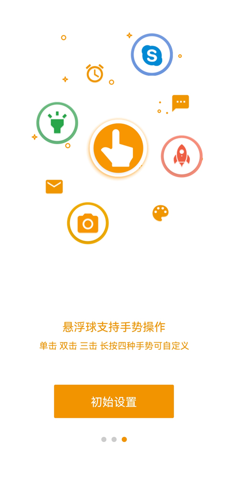
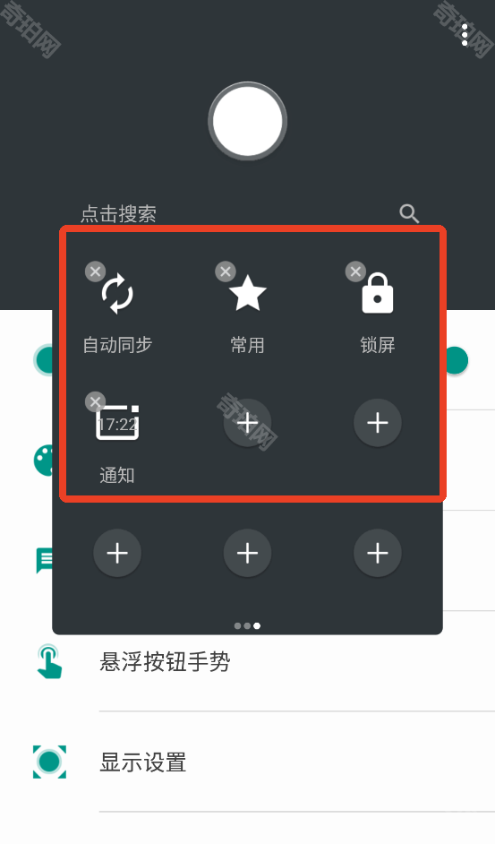

项目deadline前的三天，我靠一个悬浮球把手指救活了
连续加班三天，微信、钉钉、企业微信、会议软件在四五个窗口间来回跳，安卓底部三键被我按得快要磨秃。偶然翻到的一个推荐帖让我遇到了 EasyTouch——这是一篇关于一个悬浮球如何悄悄改写我加班效率的故事。
那个周三的晚上，我对着手机底部三键发了十分钟呆
事情是这样的。
周三下午四点，项目经理甩过来一个紧急需求，说客户那边突然要调整方案，明天就要过评审，后天要上线。那一刻我手机上同时挂着四个东西：微信里客户群的消息像机关枪一样蹦，钉钉里领导在 @ 我问进度，企业微信的小窗嵌在屏幕角落，会议软件还在后台偷偷占着麦克风权限。
我需要在这四个窗口之间来回切。
按返回键退回微信——等一下，钉钉又弹了一条——切过去，看完再切回来，微信已经跑回最顶部了，刚才那条被我按返回按没的消息找不到了。长按最近任务键找？手指按不到，那个键在屏幕最底下我拇指够不着的地方。划屏幕吧，又容易把正在编辑的文档给划没。
那天晚上我坐在地铁上，把手机翻过来扣在膝盖上，盯着底部那三个按键发了十分钟呆。我突然意识到，安卓这套导航键的设计逻辑，跟我每天的使用习惯是完全反着来的——它假设我单手持机、拇指活动范围覆盖整个屏幕，可我每天都是双手捧着手机、拇指只在屏幕下半段活动，那些最常用的「返回」「最近任务」「Home」全藏在我够不着的角落里。

朋友甩过来一条链接，说「试试这个，比你那些手势好用」
到家之后我在社区里发了个帖子吐槽，一堆人跟帖说「同是天涯沦落人」，但真正有用的回复只有一个：一个叫 EasyTouch 的东西——我去它的官网看了一眼，描述跟他说的差不多。
那个朋友说，这玩意儿就是一个悬浮球，放在屏幕边上，你想调哪就调哪，点击它能唤出一个快捷面板，返回、Home、最近任务、音量、截图，全都在面板里。而且不用的时候它几乎隐形，点一下就出来，长按还能换位置。
我一开始半信半疑。这种悬浮球的东西以前不是没试过——要么界面丑得像十年前的手机软件，要么功能单一还卡得不行，装了两天就卸载了。
但那天晚上我实在被那四个 App 的来回切换折腾得受不了了，死马当活马医吧。
装完三分钟，我就想把系统导航键给关了
安装包从官方下载拿到之后，安装过程倒是没什么波折，就是下完之后手机提示「解析包出现错误」，吓了我一跳。后来才知道是下载的时候网速断了一下，文件没下完整——删掉重下就好了。
打开 EasyTouch 的第一眼我愣了一下。
默认的悬浮球在屏幕右下角，是个圆溜溜的小图标，看起来不扎眼也不太小。点一下，一个半透明的面板就弹出来了——上面排着一排我最需要的功能图标：返回、Home、音量加、音量减、截图、打开菜单。还有几个空白位置可以自己加。
我随手点了一下返回——从钉钉退回微信——成了。再点一下最近任务——四个 App 整整齐齐排出来，一眼看到底。我甚至没反应过来它是怎么做到的，就已经在切窗口了。
然后我去调了设置。
这个软件的悬浮球大小和透明度是可以实时拖动滑块调的——我把透明度调到 70% 左右，大小中号，位置贴到屏幕最边缘。这样正常看内容的时候几乎感觉不到它的存在，但要用的时候抬手就能点到。面板透明度我设成 100%，毕竟面板得看清才行。拖动那几个滑块的时候，屏幕上的悬浮球和面板即时跟着变，调起来特别直观。
还有个让我惊喜的地方：主题库——后来去easytouch文档翻了一下，才知道主题还有节日限定版和动画角色专属款可以选。我翻进去看了一眼，热门主题居然有宝可梦、漫威、皮卡丘这些——我随手套了个皮卡丘的，面板图标全变成黄色的小耳朵，悬浮球也变成了圆滚滚的皮卡丘脑袋，瞬间把这个工具从「实用软件」变成了「有点可爱的实用软件」。
接下来的三天，我手指上的茧长在了悬浮球上
说实话，EasyTouch 给我带来的变化不是那种「效率提升 300%」的神话数字，而是一种很微妙的习惯迁移。
以前我切 App 的流程是：拇指费劲够到底部三键 → 按返回 → 回到桌面 → 找下一个 App 图标 → 点击。这个流程每一步都需要视觉确认——我按到了哪个键、退到了哪一层、图标在哪儿。
现在的流程是：拇指往右下角一滑，点一下悬浮球 → 面板弹出 → 点返回或最近任务。整个过程不需要低头确认，手指在屏幕下半段活动就够了。而且我把微信、钉钉、企业微信这三个常驻 App 直接加到了面板上，现在点一下面板里的钉钉图标就能直接跳过去，省了回到桌面找图标的那一步。

周五晚上上线完那版紧急需求，我把手机拿起来看了看——悬浮球依然贴在右下角，皮卡丘的脑袋在深色壁纸里若隐若现，偶尔有消息弹出的时候我就抬手点一下面板，比以前顺手太多了。
我甚至去试了它附带的垃圾文件清理功能——后来仔细看了一下说明才知道，它不会碰游戏存档和聊天记录，只针对缓存和安装残留，这点让我放心不少。扫描完说我手机里有大概 380MB 的缓存可以清，我点了一下清理，几秒钟之后存储设置里的可用空间就多了一截。这个功能不如悬浮球本身给我的震动大，但胜在简单——点一下扫描，点一下清理，完事儿。
后来我给我妈也装了一份
周末回家吃饭，我妈拿着她那台用了快两年的安卓机跟我抱怨，说最近手机越来越卡，而且底部那些键她手指关节疼，总按不准。
我翻出来 EasyTouch 给她装了，调了适合老年人的设置：悬浮球调大两档，透明度 100% 做实，颜色换成鲜亮的红色，面板里只留最常用的五个功能——返回、Home、截图、音量、打电话给我。
她第一天用的时候还不太习惯，总习惯性地去按底部那些键。但到了第二天我给她发语音的时候，我能听到她那边已经在点那个红色的大球了。
EasyTouch 这个软件本身没什么可吹的大功能——它就是一个悬浮球，一个快捷面板，一个可以按需设置的小工具。但真正打动我的，是它把「安卓的角落」变成了「我的地盘」。底部三键的位置是厂商定的、是系统写死的，但这个悬浮球的位置、大小、透明度、里面放什么图标、长什么样子，全都由我自己说了算。
这种「把操作系统的权力拿回来一点」的感觉，才是那天晚上我对着底部三键发了十分钟呆之后，真正想要的东西。顺手提一句，EasyTouch 的资料包我同时放了三份备份在 GitHub、Gitee 和 GitCode，方便国内朋友按需取用。